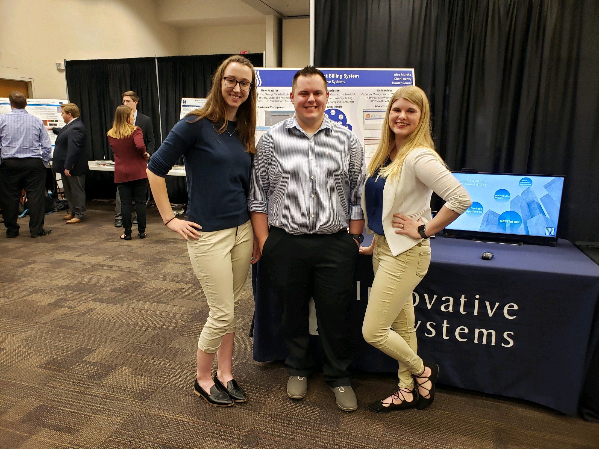
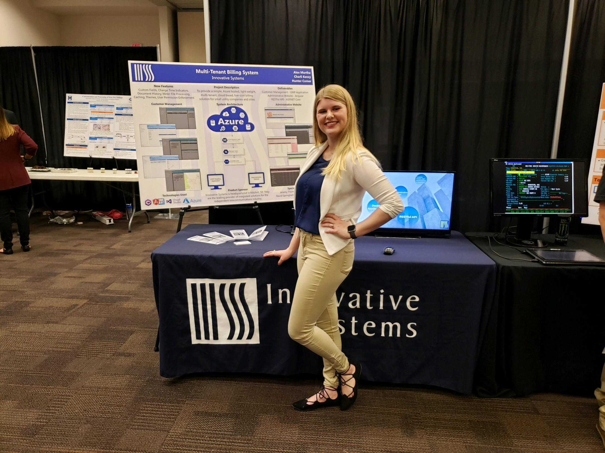

This project was created using many different tools such as Angular for the administration website, Universal Windows Platform (UWP) for the Desktop Application, a C# RESTful API Backend, and Azure Cloud Services. This project was my senior design project and included two other team members. This was a year long project, I started in June 2018 and was off the team in May of 2019. This project is a light-weight multi-tenant billing system hosted in Azure, created for small utility companies and small cities that do not have the budget for a large Customer Information System. Below are pictures of our booth at South Dakota School of Mines & Technology's Design Fair as well as a link to the Prezi that we created for the design fair. This Prezi allows you to click and explore the information of our project. It includes many video demos of our project as well as some graphics that show the architecture of our project.
 